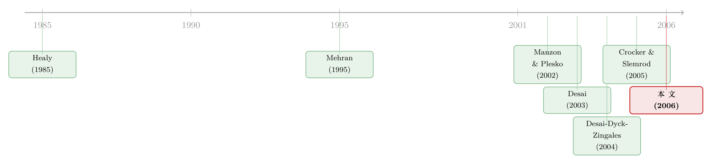

把老板和股东「绑」得更紧，他反而少避税了？
本文读的是 Desai & Dharmapala (2006, Journal of Financial Economics)：当公司给经理更高的「业绩绑定型」激励（incentive compensation）时，避税活动不升反降；而且这个负向效应几乎只出现在治理薄弱的公司里。背后的逻辑是——避税和「中饱私囊」之间存在互补，堵住了后者，前者也跟着萎缩。
1 一个本不该存在的谜
先讲一个常识。
税，是公司价值的漏勺。少交一块钱税，理论上就给股东多留一块钱。既然如此，按理说，凡是让经理人和股东「利益对齐」的安排——比如给他发一大把股票期权、把他的身家和股价拴在一起——都应该让他更卖力地去避税才对。激励越强，股东越「上心」，避税越凶。这套逻辑顺得几乎不需要证明。
可现实偏偏拧着来。
财政部前部长 Lawrence Summers 曾把企业避税称作「今天威胁美国税收体系的最严重的合规问题」。美国审计总署（GAO, 2004）的数据更刺眼：1996 到 2000 年间，约三分之一的美国大公司报告的纳税额为零，而且这个比例还在逐年攀升，到 2000 年已有 53% 的大公司缴税不足十万美元。避税的「工具箱」如此唾手可得、被抓概率又如此之低，于是 Weisbach (2002) 反过来问了一个更扎心的问题：既然避税这么容易、成本这么低，为什么公司不避得更狠一点？ 这就是著名的「避税不足之谜」（undersheltering puzzle）。
一边是激励理论说「对齐之后就该多避税」，一边是现实里公司避税远没有理论预期的那么积极。这两件事撞在一起，构成了 Desai 和 Dharmapala 这篇论文要解开的张力。
2 关键的一步：把避税塞进代理框架
要解这个谜，得先换一个看问题的角度。
以往研究避税、逃税的文献（Slemrod & Yitzhaki, 2002 综述）大多盯着个人——一个纳税人面对税率和稽查概率，权衡要不要少报收入。但 Slemrod (2004) 提醒大家：公司不是个人。公司的避税决策不是「公司」做的，而是经理人替公司做的。而经理人有自己的小算盘。
于是真正关键的一步出现了：把避税决策放进一个委托—代理（principal-agent）框架里，让它和经理人的另一项「私活」——侵占公司租金（rent diversion，通俗说就是中饱私囊）——同时发生、彼此牵连。
这一步为什么关键？因为它引入了一个被以往文献忽略的变量：避税和侵占之间的关系。经理人在做假账掩盖利润这件事上，避税和自肥可能用的是同一套「暗箱操作」基础设施。当一家公司已经搭好了一套对税务机关不透明的架构，经理人想顺手从中捞一笔，成本就更低了——这就是所谓的正反馈效应（positive feedback effects）或互补性（complementarity）。反过来，两者也可能是替代关系。
接着，一个自然的问题是：如果避税和自肥是互补的，那么提高激励会发生什么？
直觉上，提高激励 → 经理人更在乎公司价值 → 他少自肥（这是激励设计的本意），同时多避税（为股东多省税）。但如果避税和自肥互补，少自肥这件事会顺带把避税的「地基」也抽掉一块——自肥降下来，避税也跟着降。于是两股力量打架：直接效应想让避税升，互补带来的间接效应想让避税降。当互补足够强，间接效应压倒直接效应，提高激励反而让避税下降。
这就是这篇论文最反直觉、也最核心的论断。下面我们把它写成数学。
3 模型：一行效用函数里的两场博弈
模型设定得极简，但每一个假设都有用意。
公司产生外生的真实利润 \(Y > 0\)，只有经理人知道。经理人要做两个上报决策：报给股东看的利润 \(Y_S\)，和报给税务机关的利润 \(Y_T\)，二者都落在 \([0, Y]\) 之间，并约束 \(Y_S \geq Y_T\)（账面—税务差为非负）。
由此定义两个「私活」的规模：
$$D = Y - Y_S$$
是侵占（diversion）——没报给股东、被经理人当作租金私吞的那部分；
$$Z = Y - Y_T$$
是避税（sheltering）——瞒着税务机关的那部分收入。
经理人的偏好由三块拼成。第一，他从侵占中获得效用 \(w(D)\)，且这效用是递增凹的：
假设 1. \(w'(D) > 0,\; w''(D) < 0\)（即 \(w(D)\) 递增且凹）。
第二，他也在乎公司的税后价值 \((Y_S - \tau Y_T)\)，其中 \(\tau\) 是公司税率；他给公司价值赋予权重 \(\theta\)——这个 \(\theta\) 就是「激励的强度」，它衡量经理人的命运在多大程度上和股价绑在一起（比如通过股票期权）。第三，搞这两项私活都要付出成本，用损失函数 \(L(Y - Y_S,\, Y - Y_T)\) 表示，等价地写作 \(L(D, Z)\)，对两个自变量都递增且凸：
假设 2. \(L_S(\cdot,\cdot),\, L_T(\cdot,\cdot) < 0\) 且 \(L_{SS}(\cdot,\cdot),\, L_{TT}(\cdot,\cdot) > 0\)。
把三块加总，经理人的优化问题就是论文的式 (1)：
约束为 \(Y_S, Y_T \in [0, Y]\) 且 \(Y_S \geq Y_T\)。
全篇的「机关」藏在 \(L\) 的交叉偏导 \(L_{ST}\) 上：\(L_{ST} < 0\) 表示避税和侵占互补（搞了一个，另一个变便宜，即正反馈）；\(L_{ST} > 0\) 表示二者替代。后面所有反直觉的结论，符号都从这里翻出来。
对 \(Y_S\) 和 \(Y_T\) 求一阶条件，得到论文的式 (2) 和式 (3)：
$$-w'(D^*) + L_D(D^*, Z^*) + \theta = 0$$
$$-\tau\theta + L_Z(D^*, Z^*) = 0$$
我们真正关心的，是激励强度 \(\theta\) 发生微小变化时，均衡上报量怎么动。对一阶条件做全微分、套用克莱姆法则（Cramer's Rule），论文得到式 (6) 和式 (7)：
$$\operatorname{sign}\!\left(\frac{\partial Y_S}{\partial \theta}\right) = -\operatorname{sign}\big[-L_{TT}(\cdot,\cdot) - \tau L_{ST}(\cdot,\cdot)\big]$$
$$\operatorname{sign}\!\left(\frac{\partial Y_T}{\partial \theta}\right) = -\operatorname{sign}\big[-\tau\big(w''(D) - L_{SS}(\cdot,\cdot)\big) + L_{ST}(\cdot,\cdot)\big]$$
这两行就是全文的「发动机」。我们一步步读它的含义。
情形一：互补不强（满足论文的 Condition 1）。 此时式 (8) 成立：
$$\frac{\partial Y_S}{\partial \theta} > 0,\quad \frac{\partial Y_T}{\partial \theta} < 0,\quad \frac{\partial (Y_S - Y_T)}{\partial \theta} > 0$$
直觉很顺：激励一强，经理人少自肥（\(Y_S\) 升，因为他多报给股东了），同时多避税（\(Y_T\) 降），账面—税务差扩大。这正是开篇那套「常识」——也只是模型的一个特例。
情形二：互补足够强（Condition 1 不成立）。 这就是命题 2 的反转。当正反馈足够强，论文证明：
$$\frac{\partial Y_S}{\partial \theta} > 0 \quad \text{and} \quad \frac{\partial Y_T}{\partial \theta} > 0$$
注意第二个式子：\(Y_T\) 现在上升了——也就是说，避税 \(Z = Y - Y_T\) 下降了。直觉是：\(\theta\) 一升，经理人想抬高公司价值，于是 \(Y_S^*\) 上升（少自肥）；但既然侵占和避税互补，自肥降下来会让避税的边际成本变高，于是经理人的最优避税也跟着萎缩。侵占和避税，一起降了。
模型至此给出了第一个、也是最重要的洞见：激励对避税的影响，方向是模糊的，取决于 \(L_{ST}\) 的符号与大小，是一个纯粹的实证问题。 论文没有越俎代庖地给出确定答案，而是为后面的实证搭好了解释框架。
4 但模型还藏着一个「不模糊」的预言
如果故事到此为止，那它只是说「方向不定，去看数据吧」。论文真正高明的地方在于——它从同一个模型里，挤出了一个符号确定、可被证伪的预言，而这个预言关乎公司治理。
考虑两家 \(L(\cdot)\) 函数完全相同的公司。
第一家治理极强，强到经理人觉得任何侵占都贵得离谱，于是 \(D = 0\)。现在给他加激励（提高 \(\theta\)）。由于侵占已经无可再降，经理人唯一能抬高公司价值的途径就是多避税——无论 \(L_{ST}\) 是什么符号。形式上，论文论证在 \(D \to 0\) 的邻域里 \(\lim_{D \to 0} L_{ST}(D, Z) \geq 0\)，即局部不可能有强互补。好公司里，加激励 → 一定多避税。
第二家治理薄弱，\(D > 0\)。加激励的直接效应仍是同时推高 \(D\) 和 \(Z\)，但若 \(L(\cdot)\) 在相关区间存在正反馈，就多出一个间接效应：自肥下降 → 避税下降。这个间接效应抵消甚至压倒直接效应。所以在治理弱的公司里，加激励对避税的净效应更小、甚至为负。
于是命题归结为一句话：高激励推动避税的效果，应当在治理良好的公司里更强，在治理薄弱的公司里更弱（甚至变负）。 模型对「激励→避税」的符号给不出唯一答案，却对「治理如何调节这个符号」给出了毫不含糊的预言。这是一个漂亮的、可以拿去和数据对质的假设。
5 怎么「量」一件本质上看不见的事
预言有了，接下来是这篇论文最硬核的工程问题：避税本就是设计来「不被看见」的，怎么测？
答案是从账面—税务差（book-tax gap）里「提纯」。
第一步，按 Manzon & Plesko (2002) 的方法，用 Compustat 的财务数据估出每家公司每年的账面—税务差——即报给资本市场的利润与报给税务机关的利润之差。但这个差里混着两样东西：一是真正的避税，二是盈余管理（earnings management）带来的应计项目（accruals）噪声——经理人为粉饰财报而做的会计调整也会撑大这个差。
第二步，正是本文的方法论贡献：用应计数据把盈余管理那一块剔出去，残差部分就被识别为每家公司每年的避税活动水平。换句话说，这个新指标是「账面—税务差中不能由会计应计解释的那一部分」。把 YT 用当期税费（current tax expense）来操作化，以与模型保持一致。
第三步，配上激励与治理的代理变量：激励用 Execucomp 数据库里的若干指标衡量；治理则用两把广为接受的尺子——Gompers, Ishii & Metrick (2003) 的反收购条款指数（G-index），以及机构投资者的持股比例。
把这些数据并起来，得到一个900 多家公司、1993–2001 年的面板。
6 数据开口说话：常识被推翻了
聚焦公司内部随时间的变化（within-firm variation，即纳入公司固定效应），结果直接砸向开篇那套常识：
激励上升，避税下降。 这与「避税和侵占互补」的假设一致——也就是模型的情形二，而非那个「顺理成章」的情形一。
更关键的是治理那道分水岭：这个负向效应主要由治理薄弱的子样本驱动，在治理良好的公司里并不成立。 这一刀正好切在命题预言的位置上：好公司里加激励不会压低避税（甚至略推高），坏公司里加激励却把避税也一并按了下去。结果对一系列扩展和稳健性检验（包括考虑股票期权抵税、引入滞后结构）都成立。
我必须诚实地说明：上面提供给我的论文正文在实证结果一节被截断了，因此本文无法逐一引用具体的回归系数与 t 值。我只复述了论文明确陈述的方向性结论与样本信息（900 多家公司、1993–2001 年），没有杜撰任何数字。读者若要援引点估计，请回到原文表格核对。
这套证据顺手解开了三个谜：
其一，避税的横截面差异为何越拉越大（accounting 文献如 Hanlon (2005) 早已注意到这一点）。激励的普及几乎波及所有公司，但它对不同治理质量公司的避税产生相反的影响——好公司被推着多避税，坏公司被按着少避税——于是公司之间的避税差距自然被撑开了。
其二，避税不足之谜。为什么公司不把避税做绝？因为股东未必希望经理人激进避税——避税会顺手为经理人自肥打开方便之门。这份税后收益，要用更高的代理成本去换，股东未必划算。
其三，为什么大账面—税务差预示着随后的负超额收益（Lev & Nissim, 2004; Hanlon, 2005）。如果大 gap 部分来自互补型避税，那它同时是「经理人有空间自肥」的信号，股东价值受损也就不奇怪了。
7 文献脉络
这条研究线，是由三股原本各走各路的文献汇流而成的。
第一股，盈余管理与账面—税务差。 Healy (1985) 开了「奖金计划如何扭曲会计决策」的先河，确立了「经理人会为私利动财报」这个母题。到了 Manzon & Plesko (2002)，研究者开始系统地度量账面利润与税务利润之间的鸿沟；Desai (2003) 进一步指出，1990 年代这道鸿沟的急剧扩大，无法用折旧、外国来源收入、期权抵税这些老因素解释，也不能完全归给盈余管理——剩下的那部分，呼之欲出地指向了避税。
第二股，高管激励。 从 Mehran (1995) 发现激励薪酬能改善业绩，到 Bebchuk & Fried (2003) 综述激励的阴暗面，再到 Erickson, Hanlon & Maydew (2003) 发现激励薪酬会显著抬高公司被控会计欺诈的概率——这条线越来越关心激励的「副作用」。
第三股，也是本文的直接母体——税收与公司治理的交汇。 Desai, Dyck & Zingales (2004) 在《Theft and Taxation》里第一次把「避税」和「经理人侵占」拧成一对互补活动，论证加强税收稽查反而可能提升公司价值。本文（2006）正是把这套「正反馈」直觉，从俄罗斯的税务整顿搬到了美国的激励薪酬场景，并造出可量化的避税指标去检验它。（关于「税」如何成为贯穿公司金融的一根主线，可参见《100% 借债，还是一分不借？》对 Graham (2003) 那篇综述的梳理。）

值得一提的是，与本文同期，Crocker & Slemrod (2005)、Chen & Chu (2005) 也开始用契约理论分析「经理人能避税逃税时的最优激励合约」。本文与它们一道，把传统上只研究个人的避税逃税文献，正式扩展到了公司部门。
8 评论与延伸（Q&A + 研究方向）
(a) 几个可能的疑问
Q：这个「避税指标」可信吗？它会不会只是把没剔干净的盈余管理当成了避税？
这是最该担心的地方。指标是「账面—税务差」减去「应计可解释部分」后的残差，本质上是一个残差，会吸收所有未被建模的噪声。如果应计模型设定有偏，残差里就会混入盈余管理乃至纯粹的度量误差。论文用应计数据做了第一道过滤，但残差法的天花板就在于此——它度量的是「无法用会计应计解释的账面—税务差」，把它直接读作「避税」需要一份信念。
Q：激励和避税之间，会不会是反向因果或遗漏变量？
论文聚焦公司内部随时间的变化（公司固定效应），剥掉了「天生爱避税的公司天生爱发期权」这类不随时间变的混淆。但激励薪酬本身是内生的——它可能随公司前景、税务地位一起变动（Core & Guay, 2001; Graham et al., 2004 都指出税务特征会反过来塑造薪酬）。论文还引入滞后结构来缓解，但严格的外生冲击（如税法或会计准则的外生变动）会更有说服力。
Q：为什么「治理弱才出现负效应」这个交互项，比主效应更重要？
因为主效应（激励→避税）的符号在理论上本就是模糊的，谁也不奇怪。真正能证伪模型的，是那个符号确定的预言：互补性只能在 \(D > 0\)（治理弱、有自肥空间）时局部存在，\(D \to 0\) 时必然消失。所以「负效应集中在治理弱的公司」不是一个附带发现，而是模型的命门所在——它过不了这一关，整个互补性故事就站不住。
Q：股东「不希望经理人激进避税」，这说得通吗？少交税明明是好事。
模型给的答案是：避税不是免费的。当避税和自肥互补时，鼓励避税等于替经理人把自肥的「地基」也打好了。股东要在「税后多留的钱」和「经理人多偷的钱」之间权衡。如果后者足够大，理性的股东宁愿少避一点税。这正是对避税不足之谜的解释。
Q：这和「凸性激励诱发财务造假」是一回事吗？
不完全是，但血缘很近。Erickson et al. (2003) 那条线讲的是激励把经理人推向对股东的造假（虚报利润）；本文讲的是激励如何影响对税务机关的避税，以及它如何与对股东的自肥纠缠。两者都在说「激励有副作用」，但作用的对象和机制不同。（关于期权凸性如何把高管推向财报造假，可参见《凸性的诱惑》。）
Q：结论对税率 \(\tau\) 敏感吗？换个国家、换个年代还成立吗？
模型里 \(\tau\) 直接进了反转条件（式 6、式 7 中的 \(\tau L_{ST}\)、\(\tau(w'' - L_{SS})\) 项），所以税率水平会调节互补效应的强弱。论文用的是 1990 年代的美国数据，彼时正逢期权激励和账面—税务差双双暴涨，是检验这套机制的「天选样本」。换到低税率或治理环境迥异的经济体，符号未必照搬。
(b) 几个可能的研究问题与提案
1. 把「互补性」搬到公司债市场：避税与债权人保护
【经济故事】本文讲的是避税与「对股东自肥」的互补。一个自然的延伸：避税与「对债权人掏空」是否也互补？激进避税往往伴随不透明的实体结构，而这恰恰也是侵占债权人抵押品、转移资产的温床。若如此，高收益债的信用利差里，应当含有一块「避税—掏空互补」的溢价。 【可行性】中。需要把本文的避税残差指标与债券层面的利差、契约严苛程度（covenant strictness）合并；识别上仍受激励与避税内生性困扰，可借助税法外生变动或评级机构的契约数据。数据可得，识别是难点。
2. 外资持有人是治理的「替代品」吗？
【经济故事】本文的核心调节变量是治理质量（G-index、机构持股）。外国机构投资者常被认为带来更强的监督与透明度要求。若外资持股能把公司推向「\(D \to 0\)」的好治理一端，那么外资进入后，激励对避税的负效应应当减弱——即外资让「加激励→多避税」重新成立。 【可行性】中高。可用各国对外资开放（investability 提升）的事件做准自然实验，配合本文式的避税指标。外资持股数据与避税指标都可得，开放事件提供了相对干净的外生冲击。
3. 用税法/会计准则的外生变动重做识别
【经济故事】本文最大的软肋是激励与避税的联合内生性。若能找到一次只冲击激励、不直接冲击避税（或反之）的外生政策——例如对期权会计处理（如 FAS 123R 强制费用化）或高管薪酬税收待遇的改革——就能把因果链钉死。 【可行性】高。FAS 123R（2005 前后）是公认的期权激励外生冲击，前后样本现成；难点在于该冲击恰在本文样本末端，需向后延展数据。doable，且能显著提升说服力。
4. 避税的横截面差异扩大，是否预示了行业层面的资源错配？
【经济故事】论文用「不同治理公司被激励推向相反方向」解释了避税差异的扩大。若避税与自肥互补，那么在治理弱、避税被压低的公司聚集的行业，资本配置效率应当系统性更差。可把避税指标聚合到行业层面，检验它与全要素生产率离散度的关系。 【可行性】中。需要把公司层面的避税指标与行业生产率数据对接，识别上要小心反向因果（差行业本就治理差）。是一个探索性方向，结论需谨慎。
9 我的判断
这篇论文的贡献，与其说是一个实证结果，不如说是一次视角的重置。它把「避税」从一个纯粹的税务/会计问题，改写成了一个代理问题：决定避税的不是抽象的「公司」，而是有私心的经理人；而经理人手里，避税和自肥常常共用同一套暗箱。一旦接受这个设定，那个「激励对齐之后就该多避税」的常识就自动降级成了一个特例，避税不足之谜、避税差异扩大、大 gap 预示负收益这三件事也一并有了统一的解释。理论与实证咬合得相当漂亮，尤其是那个「符号确定」的治理交互预言——它让一个本来模糊的故事变得可以被证伪。
但我的担忧也集中在「测量」与「识别」这两处。避税指标是一个残差，它的可信度完全押在应计模型设定对不对上；而激励薪酬的内生性，公司固定效应加滞后结构只能缓解、不能根除。换句话说，这篇论文最迷人的那个交互效应，建立在两根都需要信念支撑的支柱上。
后续我最想看到的，是有人拿一次干净的外生冲击（FAS 123R 是现成的候选）把这条因果链重新钉一遍；以及把这套「避税—掏空互补」的逻辑搬进信用市场和外资持有人的语境里，看看债权人和外国投资者是不是也在为同一份不透明买单。如果那时结论依然成立，这套「税收—治理」的范式才算真正立住了脚跟。
参考文献
- Bebchuk, L. A., Fried, J. M. (2003). Executive compensation as an agency problem. Journal of Economic Perspectives 17(3), 71–92.
- Core, J. E., Guay, W. R. (2001). Stock option plans for non-executive employees. Journal of Financial Economics 61(2), 253–287.
- Crocker, K. J., Slemrod, J. (2005). Corporate tax evasion with agency costs. Journal of Public Economics (forthcoming).
- Desai, M. A. (2003). The divergence between book and tax income. In Poterba, J. M. (Ed.), Tax Policy and the Economy, vol. 17. MIT Press, 169–206.
- Desai, M. A., Dharmapala, D. (2006). Corporate tax avoidance and high-powered incentives. Journal of Financial Economics 79(1), 145–179.
- Desai, M. A., Dyck, A., Zingales, L. (2004). Theft and taxation. NBER Working Paper 10978.
- Erickson, M., Hanlon, M., Maydew, E. (2003). Is there a link between executive compensation and accounting fraud? Working Paper, University of Chicago.
- Gompers, P. A., Ishii, J., Metrick, A. (2003). Corporate governance and equity prices. Quarterly Journal of Economics 118(1), 107–155.
- Graham, J. R. (2003). Taxes and corporate finance: a review. Review of Financial Studies 16(4), 1074–1128.
- Hanlon, M. (2005). The persistence and pricing of earnings, accruals, and cash flows when firms have large book-tax differences. Accounting Review 80(1), 137–166.
- Healy, P. (1985). The effect of bonus schemes on accounting decisions. Journal of Accounting and Economics 7(1–3), 85–107.
- Lev, B., Nissim, D. (2004). Taxable income, future earnings, and equity values. Accounting Review 79(4), 1039–1074.
- Manzon, G. B., Plesko, G. A. (2002). The relation between financial and tax reporting measures of income. Tax Law Review 55, 175–214.
- Mehran, H. (1995). Executive compensation structure, ownership, and firm performance. Journal of Financial Economics 38(2), 163–184.
- Slemrod, J. (2004). The economics of corporate tax selfishness. National Tax Journal 57(4), 877–899.
- Weisbach, D. (2002). Ten truths about tax shelters. Tax Law Review 55, 215–253.